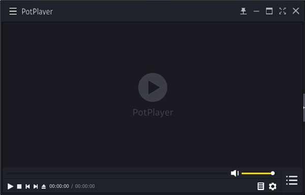
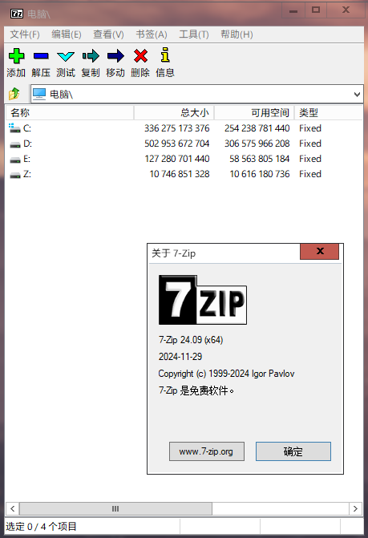

PotPlayer

PotPlayer
1. 广泛的格式支持
PotPlayer 支持几乎所有流行的视频和音频格式，包括 MP4、MKV、AVI、FLV、MP3、FLAC 等。
2. 高级字幕功能
支持自动加载、时间调整和样式自定义。
3. 强大的硬件加速
利用硬件加速提高视频播放性能。
4. 可定制的界面
自定义皮肤、快捷键和插件。
5. 出色的播放控制功能
丰富的播放控制功能，如播放/暂停、快进/快退。
下载链接：
64bit 官方服务器 32bit 官方服务器 64bit 本地服务器 32bit 本地服务器7-Zip

7-Zip
1.开放的结构
2.使用了 LZMA 与 LZMA2 算法的 7z 格式 拥有极高的压缩比
3.为 7z 与 ZIP 提供更完善的 AES-256 加密算法
5.最高支持 16,000,000,000 GB 的文件压缩
6.以 Unicode 为标准的文件名
7.支持格式：
压缩 / 解压缩：7z、XZ、BZIP2、GZIP、TAR、ZIP 以及 WIM
仅解压缩：AR、ARJ、CAB、CHM、CPIO、CramFS、DMG、EXT、FAT、GPT、HFS、IHEX、ISO、LZH、LZMA、MBR、MSI、NSIS、NTFS、QCOW2、RAR、RPM、SquashFS、UDF、UEFI、VDI、VHD、VMDK、WIM、XAR、Z 以及 ZSTD
8.与 ZIP 及 GZIP 格式相比，7-Zip 能提供比使用 PKZip 及 WinZip 高 2-10% 的压缩比
9.7z 格式支持创建自释放压缩包
10.Windows 资源管理器集成
11.强大的文件管理器
12.强大的命令行版本
13.支持 FAR Manager 插件
14.支持 87 种语言
下载链接(我们更建议使用 exe 版本的安装包而不是 msi 安装包)：
64bit 官方服务器 86bit 官方服务器 ARM64 官方服务器 （MSI 安装包）64bit 官方服务器 （MSI 安装包）86bit 官方服务器 64/86bit 7z附加包 官方服务器 64bit 本地服务器 86bit 本地服务器 ARM64 本地服务器 （MSI 安装包）64bit 本地服务器 （MSI 安装包）86bit 本地服务器 64/86bit 7z附加包 本地服务器